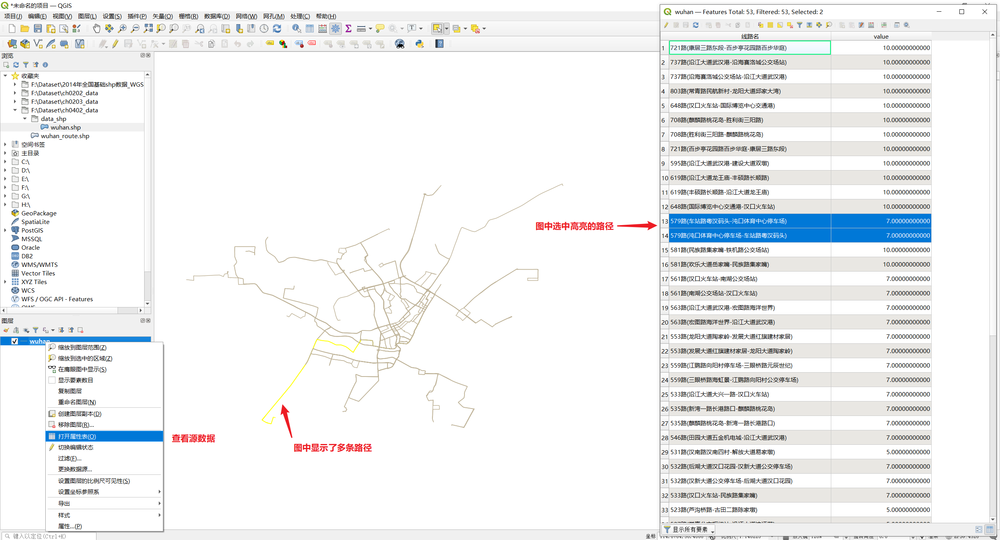
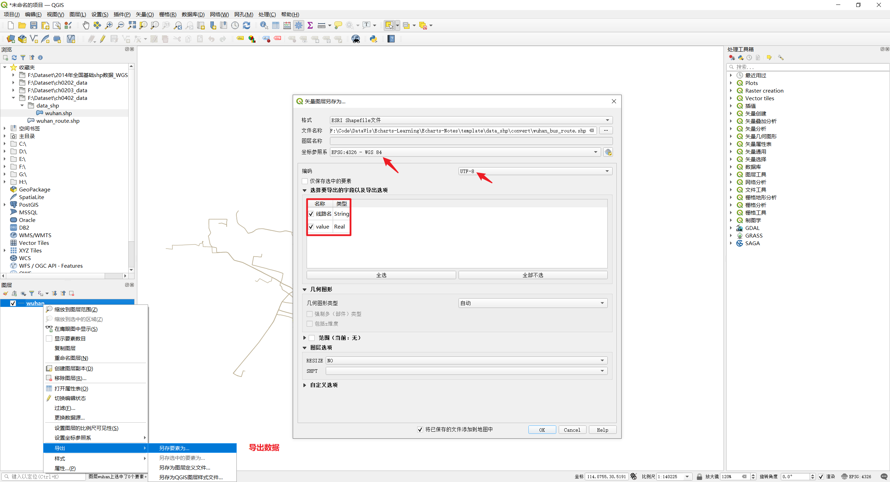

线性轨迹图
套用模板（c05-4-02-template 目录）
- data 目录：存放轨迹数据，
data.js文件就存放则转换后的GeoJSON数据（由于网页读取 JSON 文件不便，所以存储在 JavaScript 文件中）。 - set 目录：其中
setting.js文件轨迹图的可视化参数设置。
数据转换
- 实例数据源在 data_shp 目录：该数据是武汉城市的公交车轨迹。使用 QGIS 软件打开查看。 
- 使用 QGIS 将源数据导出为 shapefile 文件，注意编码方式应设置为 UTF-8，坐标系选择 WGS 84。 
- 使用在线工具 mapshaper 将 shapefile 文件中的数据转换为。
- 将 GeoJSON 数据（在文件
convert_wuhan_bus_route.json中）复制到data.js文件中（替换原有的data对象的值）。
⚠️ 在可视和空间数据时，需要先加载底图。ECharts 中提供了两种格式的地图数据，一种是可以直接 script 标签引入的 js 文件，引入后会自动注册地图名字和数据。还有一种是 JSON 文件，需要通过 AJAX 异步加载后手动注册。
💡 可以使用 ECharts 提供的百度地图扩展，将百度地图作为地图。还可以使用百度地图底图编辑工具定制样式。